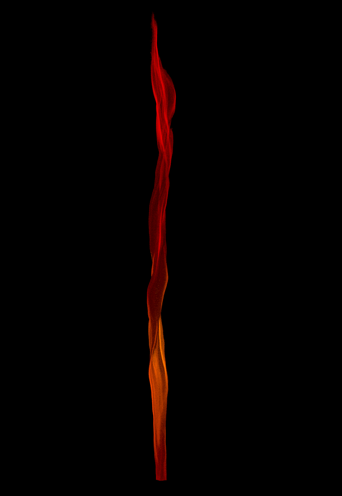
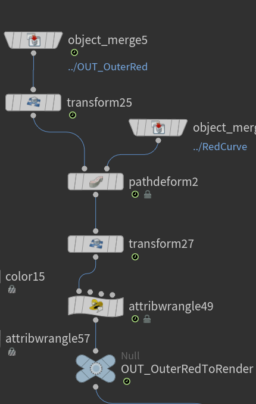
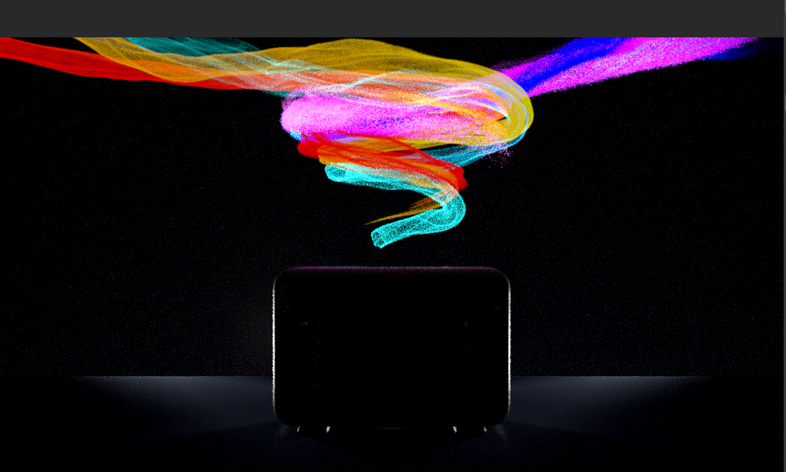

第 5 週
團隊成員
Yiqi Zheng（特效）
Riley Ho（特效）
Itim Kongsakulvatanasook（特效）
Sofia Mancias（合成）
2 月 8 日
Benji Hopkins（外觀開發）
SCAD × HARBOR × ETC － 第 5 週
大家好，這是我 SCAD × Harbor × ETC 部落格的第五週！
以下是週二簡報後導師們的回饋。
Kyle：
-
可以在中間剪掉一些，讓鏡頭不要太長，但要確保攝影機運動合理
-
鏡頭 3 看不出粒子和列印成品之間的關聯
-
要怎麼讓粒子感覺更像液體、不那麼固態
-
讓粒子成為光源，會更融入場景
-
鏡頭 4 是主鏡頭
Beck：
-
粒子和顏料的側面視角沒有關聯
-
鏡頭 2 要注意 substeps 和色帶問題
-
需要動態模糊，粒子太清晰了，看得出明顯的三個點
-
粒子太大，而且需要更多粒子
-
中心附近的粒子少一點
-
把粒子、煙霧和拖尾分層疊加
-
不一定只能用一個模擬
-
疊加多個模擬來增加複雜度
-
鏡頭 3：粒子撞到碰撞體而不是木頭本身，感覺像意外而不是刻意的創作選擇
-
粒子在抵達畫作之前不應該停下來
-
粒子的 pscale 要有變化，較舊的粒子開始消失
-
粒子可以做很多很酷的效果，去做吧
-
鏡頭 3 也許可以更微距
-
目前粒子因為高光太強，看起來像亮粉
-
需要的是粉筆般的顏料質感
-
專注在一個效果上
Molly：
-
粒子的速度太快，讓我們看不到粒子組成畫作的過渡，只看到它們噴發出來
Stephen：
-
喜歡最後一個鏡頭的佈局
Hailey：
-
把鏡頭 3 和 4 合併
Billy：


待辦事項：
-
調整粒子的路徑與流動形狀（加入 noise）
-
增加體積感並讓粒子更細
-
為粒子做更多顏色變體
這週我的主要目標是讓粒子看起來更像流體，並讓流動的邊緣有一些變化。這是我第一版的粒子流。我試著加更多 noise 來達成，但結果不理想，看起來太亂了。第二個鏡頭中，我調整了最終流動的粗細，並修改風力和 PopcurveForce 的設定，現在看起來更像流體了。
我也試著讓發射器有變化，讓粒子有更多變化。因為沒有得到更好的結果，我開始嘗試之前提過的另一種方法：pathdeform。單一流動的效果比之前好，但六道流同時出現時就顯得太雜亂。我真的需要在邊緣變化與避免過多雜訊之間取得平衡。




我喜歡這種感覺，但可惜流動不夠平順，對路徑的控制也比較少。

當我試著放更多道流時，畫面開始變得雜亂。不過這個方法適合流動數量少的特寫鏡頭，因為只需要模擬一次，就能套用到任何曲線上，非常方便實用。
-
調整路徑（為粒子增加變體）
-
改善粒子的材質